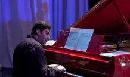

Школа, работающая по собственному оригинальному учебному плану, до сих пор остается единственной в мире. Она имеет джаз-клуб и студию звукозаписи, которой уже выпущено около десяти CD. На базе учебного заведения систематически проводятся семинары и мастер-классы, в которых принимают участие педагоги Санкт-Петербурга, Волгограда, Сочи, Одессы (Украина), Дортмунда (Германия), Глазго (Шотландия), Праги (Чешская Республика), Нью-Йорка (США)…С 2008 дважды в год здесь проходят курсы повышения квалификации преподавателей ДМШ и ДШИ Ростова-на-Дону и ЮФО. В 1998 школа вошла в Международную Ассоциацию джазовых школ (IASJ).

Среди учеников школы немало победителей Международного конкурса молодых джазовых исполнителей: Гран-при – саксофонист Алексей Некрасов (2001), I премия – барабанщик Роберт Галстян (2003), Гран-при – саксофонист Евгений Ринг (2007), II премия – барабанщик Самвел Саркисян (2011), III премия – бас-гитарист Артём Аванесов (2011). С 2001 года учебное учреждение входит в Муниципальный Образовательно-Концертный Музыкальный Центр им. К. Назаретова (с 2011 года – МБОУ ДОД «ДШИ «ОКО им. К. Назаретова»).
В школе работает 45 преподавателей, среди которых есть и бывшие выпускники: Алиса Гузева (класс ритмики), Карен Саргсян ( класс саксофона), Тамара Тарасова (класс вокала).
Сегодня в школе обучается 480 учеников, принимающих активное участие в культурно-концертной жизни города. Они – всегда желанные гости самых разных джазовых площадок: от большого московского концертного зала «Россия» и Джазовой филармонии Санкт-Петербурга до европейских сцен Германии, Чешской республики и Шотландии.
В 1995 году в Ростове-на-Дону по инициативе учеников Кима Аведиковича Назаретова была открыта первая в России специализированная детская джазовая школа. Обучение детей с трёх лет ведётся по всем специализациям джазового оркестра, включая вокал.
В школе 4 отделения – ЭДМ, ЭЭВ, ИЗО и Хореографии. Есть множество учебных джазовых ансамблей, и квартет педагогов «New-Centropezn». Школа систематически принимает участие во всероссийских и международных конкурсах и фестивалях, завоёвывая высокие награды.
Многие выпускники школы продолжили профессиональное обучение в Ростовской Государственной Консерватории (Академии) им. С.В. Рахманинова(барабанщик Роберт Галстян, бас-гитарист Игорь Убилава, саксофонист Карен Саргсян, пианист Михаил Баланов, контрабасист Фёдор Степанов), США(альт-саксофонист Алексей Некрасов), Голландии (вокалистка Алина Енгибарян, пианистка Лия Григорян, тромбонист Одей Аль-Магут, саксофонист Сергей Аванесов), Германии (саксофонисты Евгений Ринг, Артем Саргсян, Эльдар Цаликов; трубач Виталий Киселёв).
В 2008 году школа стала победителем Всероссийского конкурса «Детские школы искусств достояние Российского государства». На Общероссийском конкурсе «Лучший преподаватель детской школы искусств России» лауреатами стали: в 2010 году Андрей Мачнев (класс саксофона и оркестра), а в 2011 году Арам Рустамянц (преподаватель фортепиано и композиции).